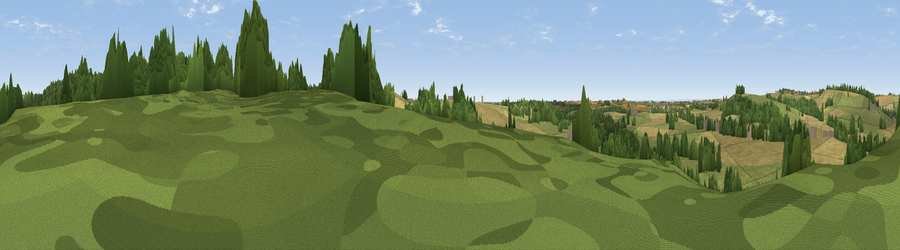

Viewpoint near Howsham
#38351 in England · top 83% of its area beats it · near HowshamThe view, rendered

A 360° render of this exact spot computed from the terrain model, tree cover and land cover — summer colours, afternoon light, calibrated against photographs of famous viewpoints. Real trees, hedges and buildings will differ in detail.
The panorama
Grey silhouette: terrain skyline in each direction (720 bearings, Earth curvature and refraction included). Dashed green: skyline with trees (+15 m) and buildings (+8 m) as obstacles. Blue strip: how far the ground is visible on each bearing.
Where the view opens
Wedge length = distance to the farthest visible ground on that bearing (vegetation-aware). Rings at 10, 25 and 50 km.
What fills the view
42% cropland · 35% grassland · 22% woodland
Angular shares of the visible panorama (visual magnitude), not map area. Landscape diversity 0.47 (0–1 Shannon).
Key numbers
More beautiful places nearby
The staircase of upgrades: each row has a higher view potential than everything closer. Driving times are estimates from straight-line distance, calibrated against real road routing — check an actual route before setting out.
| Place | Direction | Drive | Score |
|---|---|---|---|
| Viewpoint near Crambe | WNW · 2 km | ~4 min | 54.5 |
| Viewpoint near Whitwell on-the-Hill | NW · 3 km | ~6 min | 58.6 |
| Viewpoint near Whitwell on-the-Hill | NW · 3 km | ~7 min | 59.0 |
| Viewpoint near Acklam | SE · 5 km | ~11 min | 68.5 |
| Viewpoint near Leavening | ESE · 5 km | ~11 min | 73.7 |
| Viewpoint near Acklam | ESE · 6 km | ~13 min | 73.8 |
| Viewpoint near Ampleforth | NW · 21 km | ~36 min | 76.6 |
| Viewpoint near Kilburn | NW · 29 km | ~46 min | 79.3 |
54.06322, -0.86591 · source: screening · position refined by local search. Computed location — check access rights before visiting.